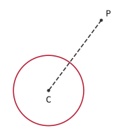
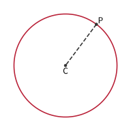
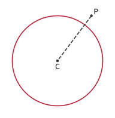

別冊練習問題 10 の解答 円周上の動点と定点との距離の最大・最小
(1) 円 \((x-1)^2+(y-1)^2=4\) 上を動く点 \(Q\) と点 \(P(4,5)\) の距離 \(PQ\) の最大値と最小値を求めよ。
中心との距離
\[PC=\sqrt{(3)^2+(4)^2}=5\]
直線 \(PC\) が円と交わる2点が最も近い点・最も遠い点。

最小・最大
\[\text{最小}=|5-2|=3,\qquad \text{最大}=5+2=7\]
【答案】
\[\text{最大 }7,\ \text{最小 }3\]答
(2) 円 \((x-2)^2+(y+1)^2=25\) 上を動く点 \(Q\) と点 \(P(5,3)\) の距離 \(PQ\) の最大値と最小値を求めよ。
中心との距離
\[PC=\sqrt{(3)^2+(4)^2}=5\]
直線 \(PC\) が円と交わる2点が最も近い点・最も遠い点。

最小・最大
\[\text{最小}=|5-5|=0,\qquad \text{最大}=5+5=10\]
【答案】
\[\text{最大 }10,\ \text{最小 }0\]答
(3) 円 \((x+2)^2+(y)^2=16\) 上を動く点 \(Q\) と点 \(P(1,4)\) の距離 \(PQ\) の最大値と最小値を求めよ。
中心との距離
\[PC=\sqrt{(3)^2+(4)^2}=5\]
直線 \(PC\) が円と交わる2点が最も近い点・最も遠い点。

最小・最大
\[\text{最小}=|5-4|=1,\qquad \text{最大}=5+4=9\]
【答案】
\[\text{最大 }9,\ \text{最小 }1\]答